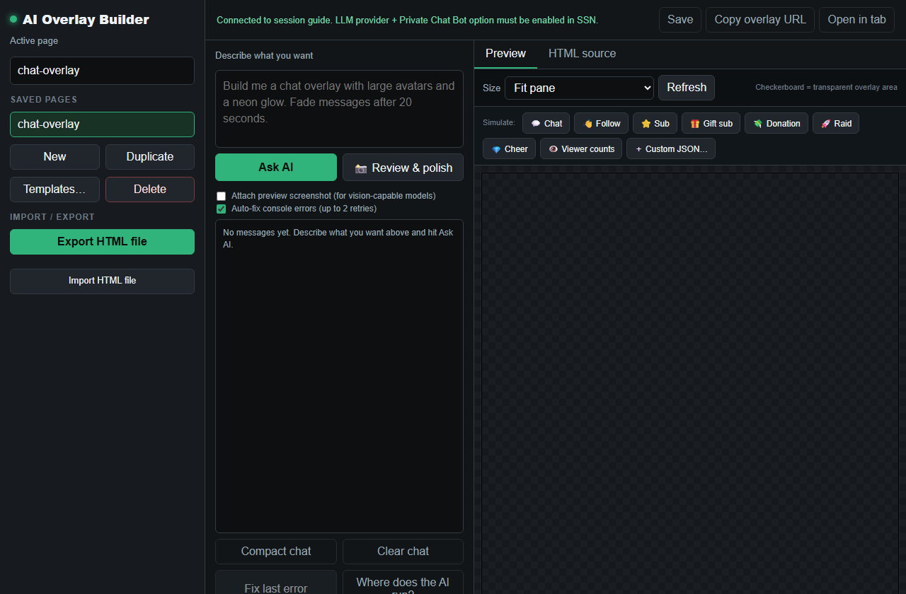

What do you want the AI to do?
| ma tahan… | Use this | API key? |
|---|---|---|
| Talk to an AI on stream that also hears chat | Voice co-host | Depends on the AI |
| Auto-answer YouTube, Twitch, Kick, or other chat | Primary chat bot | Local or cloud AI |
| Show or speak AI answers without posting in chat | Primary chat bot with overlay-only and TTS | Local or cloud AI |
| Chat privately with an AI helper | Private bot | Local or cloud AI |
| Filter, translate, or summarize chat, or answer from my documents | Chat tools | Local or cloud AI |
| Describe an overlay and have AI build it | Overlay builder | Local or cloud AI |
| Use my open ChatGPT tab as a companion | ChatGPT tab (experimental) | Ei |
Connect an AI in 5 steps
Every option except the ChatGPT tab needs this first.
- In the Social Stream popup, open Chat Bots and AI services.
- Avatud Configure LLM Service Provider and pick the AI you use.
- Fill in its address, model, API key, or download settings.
- Klõpsake Test selected chat bot.
- Turn on the feature that should use it, like the Primary bot or translation.
| Kind | Choices | Good to know |
|---|---|---|
| On your computer | Ollama, Local Gemma, Local Qwen | No cloud key. Speed depends on your computer. |
| Sinu enda server | Custom API (OpenAI-compatible) | For llama.cpp, LM Studio, vLLM, and similar. Ollama should use its own option. |
| Cloud | OpenAI, Gemini, DeepSeek, xAI, AWS Bedrock, OpenRouter, Groq, OpenCode Zen | Each service sets its own keys, billing, limits, and model names. |
| Free trial | SSN Hosted Trial LLM | Experimental. May be turned off or rate-limited. |
“ChatGPT API” vs. your ChatGPT tab
| Valik | What it is | Which conversation |
|---|---|---|
| ChatGPT API provider | Social Stream sends prompts to OpenAI with your API key. | Its own, separate from chatgpt.com. |
| ChatGPT browser source | The extension reads new messages from an open chatgpt.com tab. | The one in your tab. No API key. |
Adding an OpenAI API key doesn't connect Social Stream to a ChatGPT website or voice conversation you already have.
Voice co-host
Talk to an AI on stream. It hears your microphone, sees chat you share, and can answer out loud.
- Avatud
cohost.html?session=YOUR_SESSION. - Pick a voice AI, or the AI you set up in the popup.
- Pick your microphone and Audio Response, then press Start Co-host.
- With OpenAI Realtime, capture the co-host page audio in OBS.
- Lisa
cohost-overlay.html?session=YOUR_SESSIONto OBS for the avatar and speech bubble.

| Live Chat setting | Mida see teeb |
|---|---|
| Context only - answer when asked | Remembers chat, stays quiet until you ask about it. Works with OpenAI Realtime. |
| Speak replies to questions and mentions | Answers those out loud by itself. |
| Speak a reply to every message | Answers everything out loud. |
None of these post into platform chat. Keep the speech bubble visible so viewers can read along.
OpenAI Realtime details
- Uses the OpenAI key saved under ChatGPT API. The key stays in Social Stream. The co-host page only gets a short-lived pass, and audio travels over WebRTC.
- The overlay doesn't get the OpenAI voice. Use the co-host output picker for a virtual cable if supported.
&forcettsadds a second, separate overlay voice. - For speed: Mini model, Low reasoning, Fast turn-taking. Full quality and higher reasoning are smarter but slower and cost more. Fast can cut in on pauses.
- Camera and Screen Share are optional. Default is No Video. When on, it sends one picture per request, not live video. This adds cost and delay.
- Spotify, OBS scene, and featured-chat tools are off by default. Turn them on in the popup, then in Co-host Stream Controls.
- Replies are capped at 512 output tokens. Diagnostics shows usage and delay.
- It reconnects by itself. A fresh session keeps your instructions and settings, but forgets what was said aloud.
- It doesn't take over a conversation in the ChatGPT website or app.
Primary chat bot
Answers viewer messages on an overlay, out loud with TTS, or back in chat where supported.
- Connect an AI and test it.
- Avatud Chat Bot - Primary and turn on Enable the LLM AI chat bot.
- Set trigger words, moderators-only, rate limits, history, and instructions.
- For a safe first test, turn on Bot replies ONLY go to the bot overlay page.
- Avatud
bot.html?session=YOUR_SESSION. Turn on TTS if replies should be spoken. - Turn overlay-only off only after you've checked that platform supports posting.
Replies post from your logged-in account. For a separate name, use a YouTube, Twitch, or Kick bot account where supported.
Private bot
A one-on-one helper, good for testing prompts.
- Lülitage sisse Chat Bot - Private Interface.
- Avatud
chatbot.htmlwith your session.
Chat tools
| Tool | Mida see teeb | Start safely |
|---|---|---|
| Censor bot | Checks, cleans up, or blocks incoming messages. | Start in non-blocking mode and review what it flags. |
| Translation | Translates incoming chat, and optionally your own messages. | Test one language. Avoid block mode until it's reliable. |
| Knowledge base (RAG) | Lets the Primary bot look things up in files you upload. | Use up-to-date, focused text or Markdown files. |
| Chat summaries | Viewers type !summary to get an AI summary. | Watch history size, cost, and private content. |
Overlay builder
Describe an overlay in aiprompt.html, then preview and save it. Add aioverlay.html to OBS to show it.

ChatGPT tab (experimental)
Already use ChatGPT in Chrome and don't want an API key? Social Stream can pick up new messages from your ChatGPT tab, like any other chat source (type openai).
Capture your ChatGPT tab
- Install and turn on the Social Stream Ninja Chrome extension.
- In the popup, turn on the ChatGPT source.
- Avatud
https://chatgpt.com/, then reload it. - Open the Dock with the same session.
- Send a new ChatGPT message. Both sides should show in the Dock. Older messages are skipped on purpose.
Send your live chat into ChatGPT
- Test on a private or unlisted stream, in a normal text chat.
- Under Management, turn on Relay all messages.
- Määra relay destinations juurde
openai, so viewer messages only go to ChatGPT. - Keep the tab open. ChatGPT's replies come back as
openaimessages. - Use ChatGPT's audio, or Social Stream TTS or an overlay, to put replies on stream.
Other AI websites
| Website | Abi |
|---|---|
| ChatGPT | Experimental. Captures new text messages, not history. Relay can type into its message box. |
| Claude | No conversation capture. The included Claude script only changes the page style. |
| Gemini, Copilot, Perplexity, others | No website capture. Their APIs may still work if listed as a provider. |
Probleemide lahendamine
| Probleem | Proovi seda |
|---|---|
| Connected, but no replies to chat | Turn on the Primary bot or the feature you want. Connecting an AI alone does nothing to chat. |
| Co-host sees chat but stays quiet | Normal in Context only. Ask it about chat, or pick a mode that speaks replies. |
| ChatGPT tab shows nothing | Turn on the ChatGPT source, reload chatgpt.com, and send a new message. |
| Bot skips most messages | Check trigger words, moderators-only, rate limits, and your instructions. It's picky by design. |
| Text shows but no sound | Make sure the page making the sound is open and OBS captures its audio. |
| Bot can't post in chat | Check that platform supports it, you're logged in, the account can post, and rate limits. |
More: TTS Setup, Local AI TTS, ja AI Integration in Commands & API.